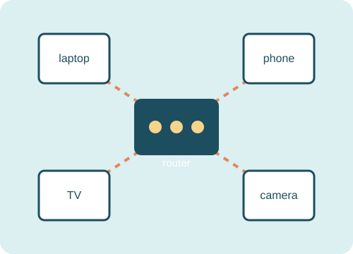
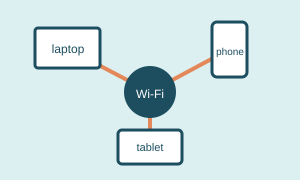
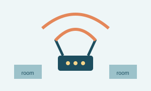

It is everywhere
Phones, televisions, cameras, speakers, and laptops all need the network to work. A little organization makes the whole house easier to manage.
Page one
I started paying attention to home networking after realizing how many devices depend on one little box. This site is a collection of notes about planning, protecting, and troubleshooting a home network.
See my setup
Phones, televisions, cameras, speakers, and laptops all need the network to work. A little organization makes the whole house easier to manage.
Better passwords, updated equipment, and separate guest access are simple steps that can make a noticeable difference.
Networking gives me a reason to keep learning. Every problem usually teaches me something about how the internet actually moves.


The basic idea
A good starting point is simply making a list of the devices on the network. From there, it is easier to notice an old device, fix a weak signal, or decide what should use guest Wi-Fi.
These notes are not meant to be a complete networking guide. They are a starting point for someone who wants to understand what is happening at home before buying more equipment or changing random settings.
I want to get better at reading network logs, understanding VLANs, and finding the best locations for wireless access points. The part I enjoy is that each improvement has a visible result: a more reliable connection, a clearer diagram, or one less mystery when something stops working.